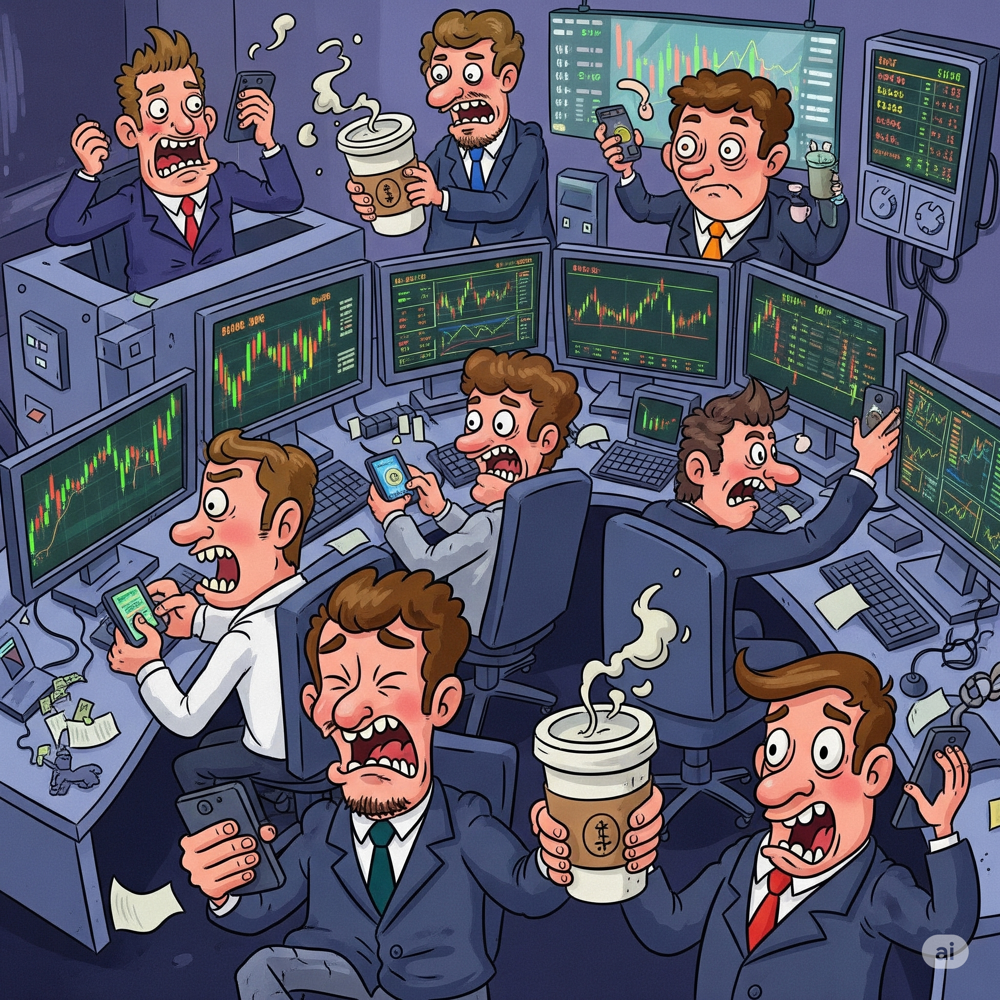

This post is a reprint of my graduate thesis for postgraduate studies in Investment Banking at the Warsaw School of Economics.
Merger Arbitrage
Financial markets are where different participants interact through trading. The two primary things being traded are capital and risk. Capital is the money exchanged for the expectation of a future return, while risk is the uncertainty associated with that return.
Arbitrageurs in Financial Markets
Market participants can be categorized based on their motivations for engaging in markets:
Speculators – They are willing to assume risk with the goal of generating a profit. They adopt a positional view on the assets and instruments they acquire or sell. This category includes everyone from specialized investment funds to individual investors saving for retirement.
Hedgers – Their aim is to mitigate their existing risk exposure. They may be consumers or producers of the underlying asset, or speculators seeking to adjust their risk profile.
Market makers – They provide liquidity, profiting from the bid-ask spread, deal premiums, fees, and commissions.
Arbitrageurs – They aim to capitalize on price discrepancies between different markets or instruments. They do not have a positional view on the market but try to identify and exploit inefficiencies in the market.
Among these four groups, arbitrageurs are arguably the most sophisticated market participants. The efficient market hypothesis assumes that market prices reflect all available information. However, markets are not always perfectly efficient. Temporary inefficiencies can occur due to things like information asymmetry, transaction costs, or behavioral biases. Arbitrageurs seek to exploit these inefficiencies to generate a profit. This is typically achieved by simultaneously buying and selling related assets in different markets or instruments, to profit from the price differences.
Mergers and Acquisitions
Mergers and acquisitions (M&A) is a general term that refers to the consolidation of companies or assets through various types of financial transactions. A merger is a term used to describe the combination of two companies into a single entity, while an acquisition refers to the purchase of one company by another. The motive for both is that consolidation would create synergies, which would lead to increased efficiency and profitability. This includes:
Increased market share – Companies increase their market share and gain a competitive advantage.
Economies of scale – Larger companies can achieve economies of scale, reducing costs and increasing profitability.
Diversification – Companies can diversify their product lines and reduce risk by entering new markets.
Horizontal integration – Companies acquire players upstream or downstream in the supply chain, increasing their control over the production process.
Access to new technology – Companies can acquire new technology or intellectual property, enhancing their competitive position.
Merger Arbitrage
Merger arbitrage is an investment strategy that involves trading in the stocks of companies involved in mergers and acquisitions (M&A). There are two main types of M&A transactions – cash offers and stock (or share-for-share) offers. The basic investment premise of an arbitrageur in each of those can follow these hypothetical scenarios:
Cash offer – Company \(A\), the buyer, announces an acquisition of company \(B\), the target, for a cash payment of \(\$30\) per share. The last trading price of company \(B\) was \(\$20\). After the announcement, the price of company \(B\) rises to \(\$28\). There is still a \(\$2\) spread between the current price and the acquisition price. This represents the risk that the acquisition may not be completed. Merger-arbitrage traders will buy shares of company \(B\) at \(\$28\) and wait for the acquisition to be completed. They would pocket the \(\$2\) spread if the acquisition is successful.
Stock offer – Company \(A\) announces an acquisition of company \(B\) for a share-for-share exchange with a ratio of \(0.25\). This means that \(A\) is offering to exchange one of its shares for four shares of company \(B\). The last trading price of company \(B\) was \(15\%\) of the price of company \(A\). After the announcement, the price of company \(B\) rises to \(22\%\) of the price of company \(A\). Merger-arbitrage traders will buy shares of company \(B\) at \(22\%\) of the price of company \(A\) and at the same time short a quarter of the equivalent amount of shares of company \(A\). They would pocket the \(3\%\) spread if the acquisition is successful.
Merger arbitrage is a popular strategy among hedge funds and institutional investors, as it can provide attractive risk-adjusted returns. It hinges on the investor’s ability to accurately assess the likelihood of a merger or acquisition being completed successfully. This requires a deep understanding of the regulatory environment, the motivations of the companies involved, and the potential impact on their stock prices. Institutional arbitrageurs, like hedge funds, are often present in the courtroom during the merger process. They analyze the legal documents, financial statements, attend hearings, and compare the particular merger with similar transactions in the past. F
Risk and Return
The main components crucial for evaluating an investment are:
Expected return – The expected return is the average return that an investor can expect to earn from an investment over a specific period of time.
Time horizon – The time horizon is the period of time over which an investor expects to hold an investment before selling it.
Risk – Risk is the uncertainty associated with the expected return of an investment, often measured by the standard deviation of the returns.
After a merger announcement, the volatility of the target company decreases after the initial spike. Another way to think about it is that the portfolio of the arbitrageur is not a portfolio of stocks but a portfolio of merger spreads. The decreased risk and market neutrality make even a more modest return attractive.
The arbitrageur needs to be wary of the time horizon of the investment, as the merger may take a long time to be completed. In such a case, the spread they managed to capture may underperform the risk-free rate over that period. Historically, the average merger arbitrage spread has been around \(5\%\) to \(10\%\) per year, depending on market conditions and the specific deals involved. The source of this surplus return is explained by other sources of risk, as we’ll see in the next post.
Risk Management
Modern finance is built on the principle that risk can be quantified, analyzed, managed, and traded. The primary concepts employed in risk quantification are volatility and correlation. However, for merger arbitrage, these concepts and their related metrics from modern portfolio theory aren’t very useful. This is largely due to the relatively uncorrelated nature of the merger arbitrage strategy. The goal of pursuing such strategies is to generate alpha, which exhibits low correlation with broader market movements. While this can be a big advantage, especially when the market is unstable, it also creates unique risk management challenges.
General Risk Management Metrics
When a risk officer assesses a portfolio’s risk, they use a range of metrics. A key consideration is the portfolio’s target return, which directly influences the risk appetite, i.e., the amount of risk the portfolio manager is willing to assume. The most common risk metrics used in the industry include:
Sensitivities – These metrics measure how the value of a portfolio changes in response to changes in underlying factors. The most common sensitivities are the Greeks, which quantify the sensitivity of the portfolio value to changes in underlying asset prices, interest rates, and volatility. There are also more structured measures that involve multi-dimensional market objects, like DV01 (1 basis point parallel change in the yield curve) or CS01 (1 basis point parallel change in the credit spread curve).
Variance-based measures – These metrics assess the risk of a portfolio by examining the statistics of its returns. Common variance-based measures include standard deviation and beta. Beta is a measure of correlation between the portfolio and the general market, typically materialized as a benchmark index such as the S&P 500. Another important measure is the Sharpe ratio, which evaluates the risk-adjusted return of a portfolio. It is calculated as the excess return of the portfolio over the risk-free rate, divided by the standard deviation of the portfolio returns.
Quantile-based measures – These metrics gauge the risk of a portfolio by analyzing the distribution of its returns. The most common quantile-based measures are Value at Risk (VaR) and Expected Shortfall (ES). VaR represents the maximum potential loss on a portfolio over a given time horizon with a specified confidence level. ES, also known as Conditional VaR, represents the expected loss conditional on the loss exceeding the VaR.
Exposure limits – These constraints define the maximum amount of risk that can be assumed for a single position or within a particular market segment. Adhering to these limits is crucial for maintaining a diversified portfolio and preventing excessive concentration in any single position. This is typically expressed as the maximum potential loss that can be incurred.
Liquidity measures – These metrics quantify the speed and ease with which a position can be entered or exited. Even the best investment prospects are worthless if they cannot be executed at a scale justifying research and infrastructure costs. On the other hand, if conditions turn unfavorable, a swift exit is crucial to limit losses. Examples of liquidity measures include trade volume and the time required to liquidate a position.
Stress testing – This technique evaluates the risk of a portfolio by assessing its performance under extreme market conditions. The scenarios applied to the portfolio can be either synthetic (e.g., a \(10\%\) drop in the S&P 500, considering asset correlations) or historical (e.g., the 2008 financial crisis). Stress testing exercises are important for determining capital requirements and are often mandated by regulators. It involves analyzing not only the portfolio’s performance under the prescribed scenario but also the behavior of other risk metrics.
Risk management for a portfolio depends heavily on its characteristics; there’s no one-size-fits-all approach. The selection of appropriate risk metrics depends on the portfolio manager’s risk appetite and the specific investment strategy. Strategies that are highly specialized, like arbitrage, may require a different set of risk metrics and special considerations to be taken into account.
The Case of Merger Arbitrage
Let’s look at the specifics of risk management for merger arbitrage portfolios.
Sensitivities can be particularly important, especially when derivatives are used to leverage positions. However, standard derivative valuation models may not be suitable for stocks involved in M&A transactions. This is evident in cash mergers, where the stock price is bounded by the cash offer price. Consequently, the Black-Scholes model’s assumption of a log-normal distribution of the stock price is violated. We will examine an alternative option pricing model better suited for stocks involved in M&A in later sections.
Variance-based and quantile-based measures have limited utility for merger arbitrage portfolios. A fundamental assumption underlying these metrics, which rely on statistical analysis of returns time series, is stationarity—the invariance of the statistical properties of the returns process. This assumption is crucial for historical approaches to estimating distribution-based metrics. However, a stock’s price dynamics change dramatically following a merger announcement, making it unreasonable to assume that its past behavior is predictive of future performance. This means that historically observed standard deviation, beta, and VaR are not reliable measures of risk for merger arbitrage portfolios.
A rigorous approach to position limits is essential for the successful execution of a merger arbitrage strategy. Taking on a large position in a single stock can be very risky, given the non-negligible probability of a deal’s failure. Therefore, portfolios should be diversified across a range of stocks and sectors. We discuss this in more detail in the next section.
Liquidity and order book depth are crucial for merger arbitrage portfolios, as they can significantly impact the execution of trades. Usually, a merger offer includes a significant premium to the last trading price, which causes the stock price to jump up close to the offer price. This incentivizes long-term investors to sell their shares, as from their perspective, there is little upside in holding the stock. The arbitrageur, on the other hand, is interested in the spread between the offer price and the stock price – they provide liquidity to the sellers. Overall liquidity, trading volume, and bid-ask spread need to be monitored closely by the arbitrageur from this point onwards. If an event that endangers the merger occurs, there might not be enough buyers, and the arbitrageur may be unable to exit their position without incurring significant losses.
Special attention should be given to stress testing of merger arbitrage portfolios. The prices of stocks under merger offer revert to their historical correlation with the market during periods of market distress. This presents a unique modeling challenge, and merger arbitrage portfolios need to be treated separately from other portfolios.
Let’s get into some of the specific considerations and unique aspects of risk management for merger arbitrage portfolios.
Exposure Limits and Expected Losses
Exposure limits are a critical part of risk management for merger arbitrage portfolios. A key aspect of managing a merger arbitrage strategy is determining the maximum amount of risk that can be taken in a single position or a particular market segment. Limiting exposure reduces the probability of incurring significant losses from a single deal break.
This obviously means that a pure merger arbitrage portfolio needs to invest in multiple deals at once. The portfolio managers target a specific number of deals to be included in their strategy. Arbitrageurs can be "concentrated" (few deals, in-depth analysis) or "diversified" (many deals, spreading risk). According to a survey of risk management practices, merger arbitrageurs held an average of 36 positions, with a minimum of 25 and a maximum of 40. The maximum viable position size for each holding should be determined based on the specific investment goals.
The most straightforward approach to position limits is to cap the size of a single merger position within a portfolio, such as a 5% limit. These limits can be strict, meaning they are never exceeded, or flexible, allowing them to be exceeded if the arbitrageur has a strong belief in a deal’s success. In the latter case, there are usually two types of limits: a hard limit, which is the absolute maximum position size (red light), and a soft limit, which is the maximum position size that can be exceeded with justification (yellow light).
A more advanced approach to position limits is to set them based on the expected loss from a position and limit that to a certain percentage of the portfolio. We present a simplified procedure for calculating these limits, in the next sections.
There are other dimensions to consider when setting exposure limits. For example, the portfolio manager may want to limit the maximum exposure to a single sector or industry, which can help mitigate the risk of sector-specific events affecting multiple positions. This is, however, an easier task in theory than in practice, as the merger arbitrage universe is relatively small, and many deals are concentrated in a few sectors. As different industries go through cycles semi-independently, mergers might be concentrated in a few sectors at a time, making diversification difficult.
Limits can also be set on the types of transactions, such as restricting exposure to leveraged buyouts (LBOs), stock-for-stock transactions, etc., depending on the views and goals of the portfolio manager or the firm.
Another important risk management concept that is closely related to our calculation of exposure limits is the expected loss from a position. In the context of merger arbitrage, expected loss is the probability-weighted loss that an arbitrageur may incur if a merger deal fails to close. This is akin to the expected loss in the case of counterparty credit risk, where the expected loss is calculated as the product of the probability of default and the loss given default.
Estimation of Probabilities of Closing
Determining the probability of a merger closing is a crucial and often the most difficult step in the merger arbitrage process. Even for experienced arbitrageurs, estimating the probability of a merger closing involves a lot of guesswork and subjective judgment. The arbitrageur assumes the merger will close and will profit only if it does. They need to determine the influence of various factors that may cause a deal break. This includes:
Financing risks – The financial health of the acquirer and their ability to raise capital is crucial for the success of the merger. This is especially important for leveraged buyouts (LBOs), where the acquirer relies heavily on debt financing.
Changes in market conditions – Even though merger arbitrage is primarily an event-driven, market-neutral strategy, the overall market or specific industry conditions can have a significant impact on the success of a merger. A significant decline in the business environment is called material adverse change in legal terms. The merger agreement may include provisions that allow the acquirer to back out of the deal if a material adverse change occurs.
Regulatory risks – Regulatory approval is often a significant hurdle for mergers and acquisitions, especially in industries with high levels of competition or where the merger may create a monopoly. In some instances, for example, cross-border deals, the merger of big entities can be politicized and lead to significant delays or even cancellation of the deal.
Market cap sizes of the acquirer and target – A merger is more likely to succeed if the acquirer is significantly larger than the target. According to historical data, the probability of a merger closing is higher when the acquirer is included in large-cap indices such as the S&P 500 or the Russell 1000.
Shareholder and management sentiment – Long-term holders on either side of the deal may oppose the merger, especially if they believe it will not be beneficial for the company. Successful shareholder opposition campaigns are, however, rarely successful, especially if the merger premium over the trading price is significant.
The arbitrageur needs to consider all of these factors and assign a probability of closing to each deal. They may also use historical data regarding the proceedings of similar deals and statistical models to help estimate the probability of a merger closing. Another source of information could be overall market sentiment, which can be gauged from the media coverage of the deal and market pricing, for example, option prices.
Estimating severity of loss
The severity of loss from a merger arbitrage position is the loss that the arbitrageur incurs if the merger fails to close. Severity is analogous to the loss given default (LGD) in credit risk management. The equation for calculating the severity is deceptively simple:
\[L =P_{\mathrm{p}} - P_{\mathrm{s}}\]
where \(P_{\mathrm{p}}\) is the arbitrageur’s purchase price, and \(P_{\mathrm{s}}\) is the estimated price of the stock at the time of the merger failure. The hard part is estimating \(P_{\mathrm{s}}\), which might involve even more guesswork than estimating the probability of closing. The purchase price for the arbitrageur has already included the merger premium, but there might have already been some rumors about the possible merger before the announcement, and the stock price might have already reflected some of the merger premium. Or the merger proceedings might unearth some negative information about the target company that was not public previously and affect the outlook on the target. The arbitrageur needs to be conservative and apply punitive estimates of \(P_{\mathrm{s}}\) to avoid underestimating the severity of loss.
Calculating Exposure Limits and Expected Losses
Following the above considerations, the next step is straightforward. The estimate of the expected loss from a position is calculated as follows: \[\mathbf{E}[L] = ( 1 - \mathbf{P}_{\mathrm{success}} ) \cdot L\] where \(\mathbf{P}_{\mathrm{success}}\) is the probability of the merger closing, and \(L\) is the loss incurred if the merger fails.
The severity-based position limit is calculated as a percentage of the portfolio’s value and is set such that the severity of loss does not exceed a certain threshold.
Stress Testing
As emphasized in previous chapters, merger arbitrage portfolios exhibit low sensitivity to broader market movements. It is useful to conceptualize a merger announcement as a phase transition wherein the target company’s stock price loses its historical correlation with the general market and its industry.
However, certain events can cause the stock price to revert from this phase transition and resume behaving like a typical stock. The most obvious example is the failure of the merger. Other events can also trigger this shift. For instance, during periods of market distress, risk arbitrage returns tend to become positively correlated with the market. This dual effect – uncorrelated returns in normal times and positive correlation with the market during distress – needs to be addressed in the context of stress testing. The whole goal is to assess the risk of a portfolio in extreme market conditions, so the modeling approach should take into account any non-linearities and regime-switching phenomena the portfolio may exhibit.
Merger Arbitrage as a Short Put Option
The described behavior of arbitrage strategies resembles that of a short position in an out-of-the-money (OTM) put option on a market index. This regime-switching phenomenon was initially observed by Mitchell and Pulvino, who noted that merger arbitrage performs poorly in sharply declining markets. They propose to model the merger arbitrage returns using a piecewise-linear CAPM-type model (broken-stick regression), i.e.,
\[\begin{aligned} R_{\mathrm{Risk Arb}} - R_f &= (1 - \delta)[\alpha_{\mathrm{Mkt Low}} + \beta_{\mathrm{Mkt Low}}(R_{\mathrm{Mkt}} - R_f)] \\ &+ \delta[\alpha_{\mathrm{Mkt High}} + \beta_{\mathrm{Mkt High}}(R_{\mathrm{Mkt}} - R_f)], \end{aligned}\]
where \(\delta\) is an indicator function – equal to one if the excess return is above a threshold level and zero otherwise. To ensure model continuity, it needs to be imposed that the two linear functions are equal at the threshold level, which translates into the following equation:
\[\alpha_{\mathrm{Mkt Low}} + \beta_{\mathrm{Mkt Low}}(\mathrm{Threshold}) = \alpha_{\mathrm{Mkt High}} + \beta_{\mathrm{Mkt High}}(\mathrm{Threshold}) .\]
According to their study, in instances where the market index drops by more than \(4\%\) in a month, the average merger arbitrage portfolio suffers a decline as well, with an average beta value of around \(0.5\). In a bullish market, the average beta is essentially zero, so the strategy misses the market upside. This means the merger arbitrage alpha is partly compensation for taking on downside market risk without getting the upside. This is analogous to the arbitrageur underwriting uncovered market index put options.
A simple strategy to mitigate merger arbitrage losses involves buying out-of-the-money index put options. While these options usually expire worthless (resulting in the loss of the option premium), they can offset losses from collapsing deals during market downturns. This strategy improves the risk profile but slightly lowers returns in most market conditions due to the cost of the options.
Managing downside risk with equity put options may be insufficient, as this method often overhedges but underhedges when the hedge is most needed. More sophisticated models were developed to model arbitrage strategy returns during market downturns. For instance, Tashman proposes an approach using finite mixtures that includes multiple explanatory variables. Despite the complexity of the model, the main conclusion remains the same: the merger arbitrage strategy exhibits a regime-switching behavior, with a beta of around \(0.39\) during market downturns and a beta of around \(0.01\) during normal times.
The Practice of Stress Testing
The above findings suggest a proper way to stress test a merger arbitrage portfolio. The arbitrageur can mimic the regime-switching behavior of the portfolio by substituting the arbitrage spread positions with a short put option on the market index for certain risk-management calculations. More specifically, the position should be represented as:
A merger spread, i.e., itself, for purposes of calculating market sensitivities, standard deviation, Sharpe ratio, position limits, and normal quantile-level VaR.
A short put index option for purposes of calculating stress test scenarios, extreme quantile-level VaR, and Stress VaR (i.e., VaR under a stressed historical scenario). The chosen index should be the one that best represents the portfolio’s risk profile, typically the S&P 500, but it can also be a sector index or a custom index.
This approach is referred to as position proxying and is a common practice[^1] in the industry. It is simple (if not crude) but effective in properly assessing arbitrage portfolio performance under stress. Without the proxying, the losses would be underestimated, resulting in a false sense of security and inadequate capital reserves to cover the drawdowns.
Option Pricing
Merger arbitrage is comparatively a low-volatility strategy, being a market-neutral investment. To amplify the returns, arbitrageurs often employ leverage. Two main vectors of leverage are available: borrowing cash (through margin or loans) to increase the size of the position, or using derivatives to increase the exposure to the underlying stock.
Options on M&A Targets
Often, purchasing derivatives is the more efficient way to achieve the desired exposure. Derivative instruments are priced based on risk-free interest rates; hence, the associated costs can be lower than borrowing cash. They also allow for more precise engineering of the exposure, as they can be sold or bought depending on the turning market conditions. Purchasing calls on the target stock can be a cost-effective way of obtaining leverage. The option premia are typically low after the announcement of a merger, as the volatility of the stock price drops.
There are other ways that options on M&A targets can be utilized. One is to purchase puts to limit the downside risk of a merger failure. This incurs a premium cost, as mostly the options would expire worthless, but it can allow for a more aggressive overall position size. Finally, option prices can convey information about the market’s expectations regarding the merger outcome. Just as in the general case, option quotes can be used to infer the market’s expectations of the future volatility of the underlying stock; for M&A targets, this can be used to gauge the market’s expectations of the merger outcome. All three of the aforementioned uses require a proper pricing model for the options.
Option Pricing on Stocks Involved in M&A
As signaled, the standard Black-Scholes model is not suitable for valuation in the context of stocks under a merger process. More complex mathematical models are needed to account for their unique characteristics. This complexity arises from the fact that, unlike typical stocks, the stock price in an M&A scenario does not follow a continuous process. Instead, it is characterized by discrete price movements, or "jumps." For a stock undergoing a merger, the price would undergo a sudden, instantaneous drop if the merger were to fall through.
Ajay Subramanian made an early attempt to model this, proposing a framework for pricing options on stocks under M&A. His work models option prices of two stocks undergoing a merger, one of which is the target and the other is the acquirer. The pricing model is based on the assumption that the stock price dynamics are governed by the following stochastic differential equations (SDEs):
\[\begin{aligned} dS_1(t)|_{N(t)=0} &= 1_{N(t)=0} [(\mu_1(t) - d_1)S_1(t-)dt + \sigma'_1 S_1(t-)dW_1(t)] \\ dS_2(t)|_{N(t)=0} &= 1_{N(t)=0} [(\mu_2(t) - d_2)S_2(t-)dt + \sigma'_2 S_2(t-)dW_2(t)] \end{aligned}\] where
\(S_1, S_2\) are the prices of the stocks.
\(\mu_1, \mu_2\) are the drifts of the diffusion processes.
\(\sigma'_1, \sigma'_2\) are the respective volatilities before the jump.
\(1_{N(t)=0}\) is 1 before the jump, \(1_{N(t)=1}\) is 1 after a jump, if any.
\(t-\) is a notation for the time just prior to \(t\).
\(d_1, d_2\) are the respective dividend yields.
\(W_1, W_2\) are Brownian motions.
If the merger fails, the stocks would revert to a standard Black-Scholes process:
\[\begin{aligned} dS_1(t)|_{N(t)=1} &= 1_{N(t)=1} [(\mu_1(t) - d_1)S_1(t-)dt + \sigma_1 S_1(t-)dW_3(t)] \\ dS_2(t)|_{N(t)=1} &= 1_{N(t)=1} [(\mu_2(t) - d_2)S_2(t-)dt + \sigma_2 S_2(t-)dW_4(t)] \end{aligned}\] where
\(\sigma_1, \sigma_2\) are the respective volatilities after the jump.
\(W_3, W_4\) are Brownian motions.
The study also provides a closed-form solution for the option price, which is given by the following formula:
\[\begin{aligned} P_1(0, T_0, K) &= e^{-\lambda T_0} \left\{ S_1(0) e^{-d_1 T_0} \frac{e^{i T_0} + A_1}{1 + A_1} N(\alpha'_1) - K e^{-r T_0} N(\alpha'_2) \right\} \\ &+ \frac{\lambda S_1(0) e^{-d_1 T_0} e^{\frac{\lambda \sigma^2 T_0}{2}}}{ (1 + A_1)(\sigma'^2 - \sigma^2)} A_1 \int_{2T_0}^{\sigma^2 2T_0} dt e^{\frac{\lambda t}{\sigma'^2 - \sigma^2}} N\left( \frac{x + 0.5t}{\sqrt{t}} \right) \\ &- \frac{\lambda K e^{-r T_0} e^{\frac{\lambda \sigma^2 T_0}{2}}}{(\sigma'^2 - \sigma^2)} \int_{2T_0}^{\sigma^2 2T_0} dt e^{-\frac{\lambda t}{\sigma'^2 - \sigma^2}} N\left( \frac{x - 0.5t}{\sqrt{t}} \right) \end{aligned}\] where:
\(x = \log \left[ \frac{S_1(0)}{K(1+A_1)} \right] + (r - d_1)T_0.\)
\(A_1, A_2\) are chosen so that the stock jumps by a factor
\(\beta_i(t) = A_i \exp(t(-\lambda))/(1 + A_i \exp(-\lambda t))\) if the deal breaks.\(\lambda\) is the risk-neutral probability density of the deal breaking.
The formula is quite complex, and the derivation of the closed-form solution is beyond the scope of this post. An important aspect is that the model has some practical utility and can be used to extract information about the market’s expectations of the merger outcome. It is used to derive the implied probability of the merger closing, similar to the implied volatility in the standard Black-Scholes model.
The empirical results of the study show that the market option prices, combined with the model, are suitable predictors of the merger outcome. The model-implied closing probabilities are derived for a set of merger deals. For the merger deals that closed, the model-implied closing probabilities were significantly higher than for the deals that failed to close. The probability implied by this model could be a useful input for the arbitrageur’s decision-making process and be taken into account when estimating the expected loss from a position.
Conclusion
Risk management for merger arbitrage portfolios is complex and requires a careful look at their unique characteristics. The main feature of merger arbitrage is its low correlation with the broader market under normal market conditions, which provides an attractive risk-return profile. However, this low correlation can shift to a positive correlation during periods of market distress, which can lead to significant losses for arbitrageurs. Even during flat or bullish markets, the arbitrageur is exposed to the risk of the merger failing, which can result in a substantial drawdown. This requires unique expertise and constant monitoring of the merger proceedings, as well as the overall market outlook on the merger target and acquirer. Merger arbitrage is a good example of why risk management needs to be flexible. It challenges traditional techniques and requires a custom approach to handle its specific risks.
References
Books
- McNeil, Alexander J; Frey, Rüdiger; Embrechts, Paul. (2015). Quantitative Risk Management: Concepts, Techniques, and Tools (Revised Edition). Princeton University Press, Princeton Series in Finance. ISBN: 978-0-691-16679-3
- Kirchner, Thomas. (2016). Merger arbitrage: How to profit from global event-driven arbitrage (Second ed.). John Wiley & Sons.
- Moore, Keith M. (2018). Risk arbitrage: An investor’s guide (Second ed.). John Wiley & Sons.
- Boyle, Patrick & McDougall, Jesse. (2018). Trading and Pricing Financial Derivatives: A Guide to Futures, Options, and Swaps. De Gruyter Press. ISBN: 9781547417308
- Welling, Kate & Gabelli, Mario J. (2018). Merger Masters: Tales of Arbitrage. Columbia University Press. ISBN: 9780231190428
- Hull, John C. (2018). Risk Management and Financial Institutions (Fifth Edition). John Wiley & Sons. ISBN: 978-1-119-42468-5
Articles
- Fung, William & Hsieh, David A. (1997). “Empirical characteristics of dynamic trading strategies: the case of hedge funds.” Rev. Finan. Stud., 10, 275–302.
- Mitchell, Mark & Pulvino, Todd. (2001). “Characteristics of risk and return in risk arbitrage.” The Journal of Finance, 56(6), 2135–2175. Wiley for the American Finance Association.
- Cont, Rama. (2001). “Empirical properties of asset returns: stylized facts and statistical issues.” Quantitative Finance, 1(3), 223–236. Taylor & Francis.
- Baker, Malcolm & Savaşoğlu, Serkan. (2002). “Limited arbitrage in mergers and acquisitions.” Journal of Financial Economics, 64(1), 91–115. Elsevier.
- Subramanian, Ajay. (2004). “Option pricing on stocks in mergers and acquisitions.” The Journal of Finance, 59(2), 633–671. Wiley for the American Finance Association.
- Moore, Keith; Lai, Gene; Oppenheimer, Henry. (2006). “The Behavior of Risk Arbitrageurs in Mergers and Acquisitions.” Journal of Alternative Investments, 9, 19–29.
- Branch, Ben & Wang, Jia. (2008). “Risk-Arbitrage Spreads and Performance of Risk Arbitrage.” The Journal of Alternative Investments, 11(1), 9–22. Institutional Investor.
- Tashman, Adam & Frey, Robert J. (2009). “Modeling risk in arbitrage strategies using finite mixtures.” Quantitative Finance, 9(5), 495–503. Taylor & Francis.
- Hall, Jason; Pinnuck, Matthew; Thorne, Matthew. (2012). “Market risk exposure of merger arbitrage in Australia.” Accounting & Finance, aop(aop). Wiley Online Library.
- Wall, Douglas Erik Leonard & Theodorsen, Olav Henrik Klingenberg. (2022). “Risk and return of the merger arbitrage strategy in the European market.” Handelshøyskolen BI.